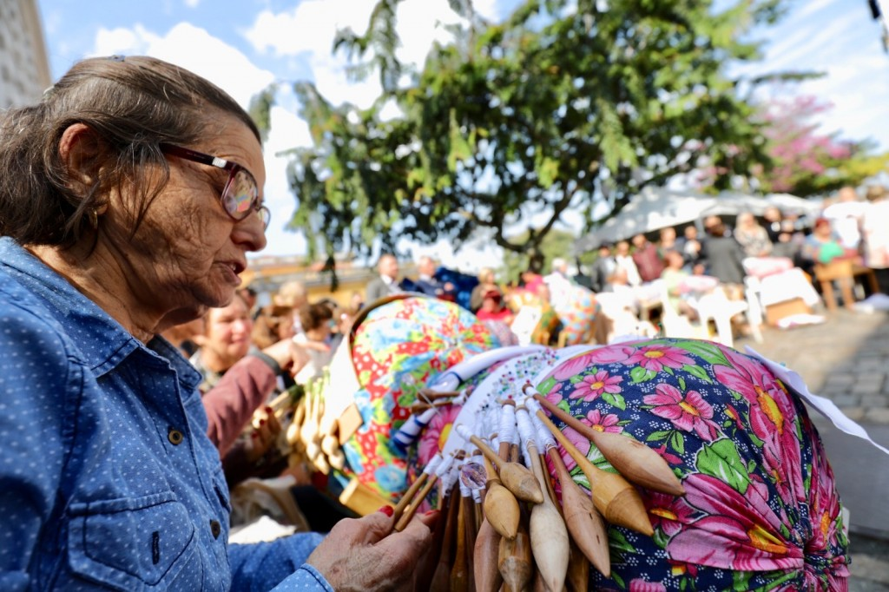

Sobre o Estado
Read the short introduction below before exploring the spots
Santa Catarina é um estado pequeno no Sul do Brasil, mas com uma costa riquíssima: mais de 500 quilômetros de praias, lagoas e baías. A capital, Florianópolis, é conhecida como "Ilha da Magia" porque boa parte da cidade fica em uma ilha, ligada ao continente por pontes — a mais famosa delas, a Ponte Hercílio Luz, é hoje um símbolo da cidade, mesmo sem carros passando por ela. Quem nasce no estado é catarinense; quem é da ilha, especificamente, costuma se chamar, com carinho, de manezinho ou manezinha da ilha.
A partir de 1748, milhares de famílias dos Açores (um arquipélago português no meio do Atlântico) chegaram à ilha a pedido da Coroa Portuguesa, que queria povoar e proteger o litoral sul. Esses imigrantes deixaram marcas profundas: na arquitetura, na culinária do mar, nas festas religiosas e em um artesanato que sobrevive até hoje nas mãos de poucas famílias — a renda de bilro.
Language Reference
Talking about something that started in the past and keeps going
The pretérito perfeito composto is ter (tenho/tem/temos/têm) in the present + the participle of the main verb.
A ilha tem recebido cada vez mais turistas nos últimos anos. — the island has been receiving more and more tourists
Regular participles end in -ado (falar → falado) or -ido (crescer → crescido, receber → recebido).
Use it for something that started in the past and keeps repeating or continuing up to now — not a single, finished event.
A tradição da renda de bilro tem passado de mãe para filha há gerações. — it has been passing down, generation after generation, and still is
Atenção, falantes de inglês: this does not work like the English present perfect. For a single, already-finished event, Brazilians use the pretérito perfeito simples: "Florianópolis was founded in the 1700s" → Florianópolis foi fundada (not tem sido fundada).
Expressions like ultimamente, nos últimos anos, nas últimas décadas and cada vez mais often signal that this tense is coming.
Ultimamente, o Ribeirão da Ilha tem atraído visitantes de fora do estado só por causa das ostras.
🔊 Pronúncia — tem e têm: the circumflex in têm exists only in writing — in speech the two sound the same. You know it's plural by the subject: a cidade tem crescido · as praias têm mudado.
Lugares para Conhecer
Read about each spot and watch the video below — notice every tem/têm + particípio

Inaugurada em 1926, a Ponte Hercílio Luz ficou décadas fechada para reformas e só voltou a receber carros no fim de 2019. Hoje ela abre para veículos de segunda a sexta-feira (das 6h às 22h) e fica reservada só para pedestres nos fins de semana. Nesse período, a prefeitura tem investido na iluminação da ponte, e ela tem se tornado, cada vez mais, o cartão-postal preferido de quem fotografa a cidade à noite. Para os catarinenses, ela continua sendo um símbolo tão importante quanto qualquer monumento histórico do país.

A Lagoa da Conceição foi um dos primeiros pontos onde os imigrantes açorianos se instalaram na ilha, no século XVIII. Nas últimas décadas, o bairro tem atraído cada vez mais surfistas, universitários e turistas, e os restaurantes e bares ao redor da lagoa têm aumentado ano após ano. À beira da lagoa fica a Avenida das Rendeiras, onde mulheres ainda vendem, à mão, a renda de bilro que suas famílias fazem há gerações. Logo ali perto, entre a lagoa e o mar, ficam as dunas e a Praia da Joaquina — um dos points de surf mais famosos do Brasil, que já recebeu etapas do campeonato mundial.

A renda de bilro chegou à ilha com as mulheres açorianas no século XVIII: enquanto os homens saíam para pescar, elas faziam renda para complementar a renda da casa (sim, a palavra "renda" serve para as duas coisas). A tradição tem passado de mãe para filha há mais de 250 anos, usando dezenas de bilros de madeira trançados com linha fina, como na foto acima — tirada numa Roda de Rendeiras, encontro onde as artesãs se reúnem para trabalhar e trocar histórias. Com o turismo, a renda tem ganhado uma nova função: de uso só doméstico, ela também tem se transformado em produto vendido a visitantes na Avenida das Rendeiras, à beira da Lagoa — mas, para as rendeiras mais antigas, ela continua sendo uma herança de família, acima de tudo.

Fundado por volta de 1750 por imigrantes açorianos, Santo Antônio de Lisboa é considerado o distrito mais bem preservado da ilha: casas baixas, paredes brancas, janelas azuis e uma igreja do século XVIII à beira da baía. As "namoradeiras" — pequenas janelas de madeira nas casas antigas — eram usadas pelas moças para namorar escondidas, sem sair de casa. Nos últimos anos, o bairro tem recebido cada vez mais visitantes ao entardecer, atraídos pela vista da baía e pelos restaurantes que têm servido alguns dos pratos de peixe e frutos do mar mais tradicionais de Florianópolis.

Em Florianópolis, o mar não é só paisagem — é também a mesa. O bairro do Ribeirão da Ilha, outro antigo núcleo açoriano, é hoje o maior produtor de ostras do Brasil, e famílias de maricultores vendem o marisco direto da água para o prato, em restaurantes simples com vista para a baía. Ultimamente, a gastronomia do mar tem se tornado a principal atração da cidade para muitos visitantes: ostras, camarões, berbigão e, principalmente entre maio e julho, a tainha assada — um peixe tão esperado na época da pesca quanto qualquer festa de fim de ano.
Vocabulário
Review before the exercises
| Português | English |
|---|---|
| catarinense | person from the state of Santa Catarina |
| manezinho(a) da ilha | colloquial term for someone from Florianópolis island |
| açoriano(a) | from the Azores (Portuguese archipelago) |
| povoar | to settle, to populate |
| a rendeira | lacemaker |
| o bilro | bobbin (lacemaking tool) |
| a herança | heritage, inheritance |
| a dupla | duna (sand dune) |
| o casario | a row/cluster of (old) houses |
| a namoradeira | small wooden window (Azorean architecture) |
| a ostra | oyster |
| o camarão | shrimp |
| o berbigão | clam (local variety) |
| a tainha | mullet (fish) |
| o(a) maricultor(a) | shellfish/oyster farmer |
| a baía | bay |
| pênsil (ponte pênsil) | suspension (bridge) |
| bem preservado(a) | well preserved |
| entardecer | dusk, to grow dark |
| trançar | to braid, to weave |
Homework Exercises
Complete after your lesson and send your answers to your teacher
Complete com o pretérito perfeito composto
More facts about Santa Catarina
Complete each sentence with tem/têm + particípio of the verb in parentheses, based on the texts above.
- 1.Nos últimos anos, a ilha(receber)cada vez mais turistas.
- 2.A prefeitura(investir)na iluminação da Ponte Hercílio Luz.
- 3.O bairro da Lagoa(atrair)cada vez mais surfistas e universitários.
- 4.Os bares e restaurantes ao redor da lagoa(aumentar)ano após ano.
- 5.A tradição da renda de bilro(passar)de mãe para filha há mais de 250 anos.
- 6.Com o turismo, a renda(se transformar)também em produto vendido a visitantes.
- 7.Nos últimos anos, Santo Antônio de Lisboa(receber)mais visitantes ao entardecer.
- 8.Os restaurantes da região(servir)pratos tradicionais de frutos do mar.
- 9.Ultimamente, a gastronomia do mar(se tornar)a principal atração da cidade para muitos visitantes.
- 10.Ultimamente, o Ribeirão da Ilha(atrair)visitantes de fora do estado só por causa das ostras.
Tip: tem/têm + participle, for something that started in the past and keeps repeating or continuing. Remember: tem for ele/ela/você, têm for eles/elas/vocês.
Um roteiro realista
Think it through — not every recommendation fits every situation
Read Claire's situation below and answer the questions in Portuguese. Use the pretérito perfeito composto (tem/têm + particípio) at least once in each answer.
Claire é canadense e está em Florianópolis há três dias. Ela adora história, arquitetura antiga e um bom prato de frutos do mar, mas enjoa fácil em lugares muito agitados. Ela tem só a tarde de hoje livre, das 13h às 18h, e quer fazer um programa tranquilo antes de pegar o avião amanhã de manhã. Um amigo falou: "Vai pra Praia Mole, é imperdível!"
Questions 1 and 2 have a factual basis in the texts above. Questions 3 and 4 are open — the important thing is a realistic, well-justified choice, not a "correct" answer.
Um guia de bolso
Write short definitions for a pocket travel guide
Write one sentence to define each place or tradition for a pocket travel guide, using the pretérito perfeito composto. Use information from the texts above, but write your own sentence — don't copy the text.
Question 5 is a personal answer — there is no single correct response.
Video comprehension
Watch the video in the Ribeirão da Ilha section above
Watch the video about beaches in Florianópolis and answer in Portuguese. Use the pretérito perfeito composto in your answers when possible.
Produção Escrita
Write about your own city
Um lugar ou tradição que tem mudado
60–90 words
Write a short text (60–90 words) about a place or tradition in your own city or region that has been changing in recent years, for a Brazilian visitor. Use the pretérito perfeito composto at least three times.
Ballard é um bairro de Seattle com forte herança escandinava, por causa dos imigrantes que chegaram há mais de cem anos. Nos últimos anos, o bairro tem mudado bastante: antigos prédios de pescadores têm se transformado em cervejarias artesanais, e o mercado de domingo tem atraído cada vez mais gente de fora do bairro. Mesmo assim, algumas famílias têm mantido vivas as tradições escandinavas, como o festival de verão.
- Escolha um lugar ou tradição da sua cidade ou região que tem mudado nos últimos anos.
- Use tem/têm + particípio pelo menos três vezes.
- Mencione pelo menos um detalhe histórico ou cultural.
When you're done, send your answers to your teacher. They will read your text carefully and give you personalized feedback — pointing out what you did well and helping you improve your Portuguese even further. This exchange is one of the most important parts of the learning process!